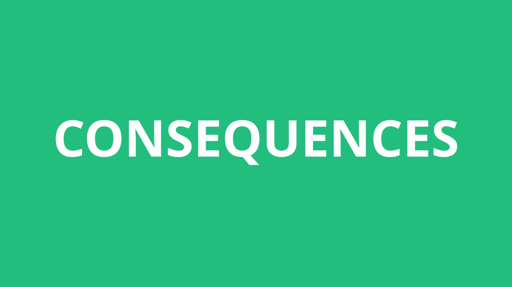

Konsekvensar og måtar
Det er to ulike sosiale medium. Vertikale og horisontale sosiale system. Dei vertikale er for eksempel skule, venner, familie eller treningsgruppa.
Horisontale system er Facebook, Youtube, Wikipedia, Twitter og diverse andre sosiale medier.